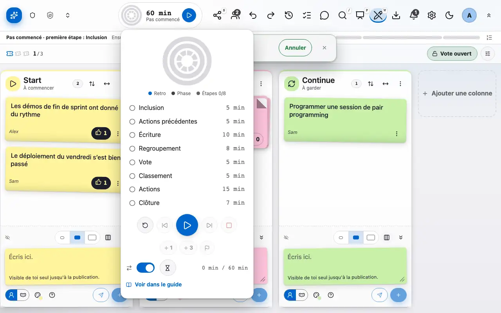
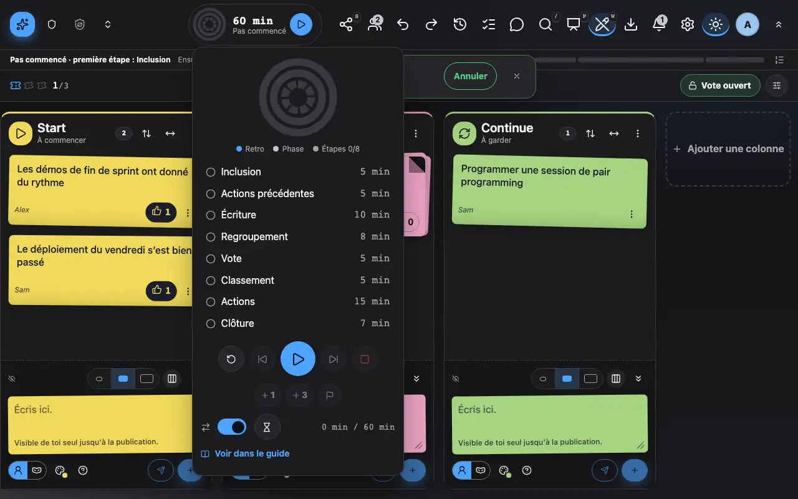
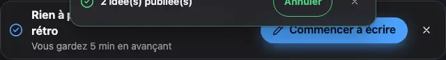

Le déroulé et le minuteur
Le déroulé découpe la rétro en phases chronométrées.
1 L’anneau montre la phase en cours et le temps restant.
L'anneau en haut du board montre la phase en cours et le temps restant. Il se remplit au fil de la phase et passe à une autre couleur quand le temps est dépassé.
2 Le panneau du déroulé permet de démarrer, passer à la phase suivante ou rallonger.
Cliquer sur l'anneau ouvre le panneau du déroulé: démarre la rétro, passe à la phase suivante, rallonge la phase en cours ou reviens en arrière. Les phases (accueil, écriture, regroupement, vote, actions) peuvent être adaptées à ta rétro.


3 Sans action à revoir, une carte propose de passer à l’écriture ; revenir en arrière replie les zones d’écriture.
Quand le déroulé arrive aux actions précédentes et qu'il n'y a rien à revoir, une petite carte le dit et propose un bouton, Commencer à écrire, à ceux qui pilotent (tout le monde quand la salle facilite en commun). Un second rappel, plus discret, apparaît en notification après quelques secondes. Rien n'avance tout seul : la phase reste en place jusqu'à un clic ou jusqu'à ce que le déroulé avance. Échap ferme la carte pour le reste de la phase sur votre écran. Quand toutes les actions précédentes sont terminées, la carte le dit au lieu de lister du travail fini.
Revenir à une phase avant l'écriture, une fois des idées présentes, replie les zones d'écriture de toutes les colonnes et affiche un bandeau avec Afficher les zones d'écriture ; vos brouillons restent sur votre appareil. Une option du board, dans les options avancées, Masquer l'écriture en revenant en arrière, le désactive pour tout le monde.
